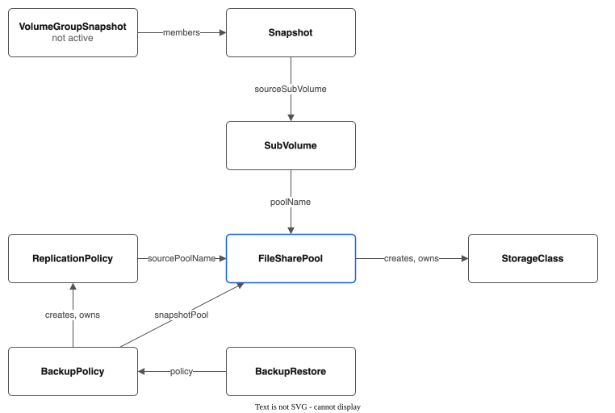

CRD Specification Reference¶
API Group and Version¶
Register in api/v1alpha1/groupversion_info.go:
package v1alpha1
import (
"k8s.io/apimachinery/pkg/runtime/schema"
"sigs.k8s.io/controller-runtime/pkg/scheme"
)
var (
GroupVersion = schema.GroupVersion{Group: "storage.ibmcloud.io", Version: "v1alpha1"}
SchemeBuilder = &scheme.Builder{GroupVersion: GroupVersion}
AddToScheme = SchemeBuilder.AddToScheme
)
How the resources relate¶

Each arrow is labelled with the field that holds the reference.
FileSharePool¶
Cluster-scoped resource. Defines a pool of VPC file shares that back PVC subdirectories.
Go Type Definition¶
// api/v1alpha1/filesharepool_types.go
package v1alpha1
import (
metav1 "k8s.io/apimachinery/pkg/apis/meta/v1"
)
// +kubebuilder:object:root=true
// +kubebuilder:subresource:status
// +kubebuilder:resource:scope=Cluster,shortName=fsp
// +kubebuilder:printcolumn:name="Zone",type=string,JSONPath=`.spec.zone`
// +kubebuilder:printcolumn:name="Profile",type=string,JSONPath=`.spec.profile`
// +kubebuilder:printcolumn:name="Shares",type=integer,JSONPath=`.status.shareCount`
// +kubebuilder:printcolumn:name="Capacity",type=string,JSONPath=`.status.totalCapacityGB`
// +kubebuilder:printcolumn:name="Allocated",type=string,JSONPath=`.status.totalAllocatedGB`
// +kubebuilder:printcolumn:name="PVCs",type=integer,JSONPath=`.status.totalPVCCount`
// +kubebuilder:printcolumn:name="Phase",type=string,JSONPath=`.status.phase`
type FileSharePool struct {
metav1.TypeMeta `json:",inline"`
metav1.ObjectMeta `json:"metadata,omitempty"`
Spec FileSharePoolSpec `json:"spec,omitempty"`
Status FileSharePoolStatus `json:"status,omitempty"`
}
type FileSharePoolSpec struct {
// Zone is the VPC availability zone for shares in this pool.
// +kubebuilder:validation:Required
// +kubebuilder:validation:Pattern=`^[a-z]{2}-[a-z]+-\d+$`
Zone string `json:"zone"`
// Profile is the VPC file share profile. "dp2" is the only one VPC offers.
// +kubebuilder:validation:Required
Profile string `json:"profile"`
// ShareSizeGB is the size in GB for each share created in the pool.
// +kubebuilder:validation:Minimum=10
// +kubebuilder:validation:Maximum=32000
// +kubebuilder:default=1000
ShareSizeGB int64 `json:"shareSizeGB"`
// IOPS per share. If unset, the VPC chooses it (100 for dp2).
// +kubebuilder:validation:Minimum=100
// +optional
IOPS *int64 `json:"iops,omitempty"`
// MaxShares is the maximum number of VPC file shares the pool may create.
// Prevents runaway share creation. Remember the account-wide 300 share quota.
// +kubebuilder:validation:Minimum=1
// +kubebuilder:validation:Maximum=100
// +kubebuilder:default=10
MaxShares int32 `json:"maxShares"`
// InitialShares is the number of shares to pre-create when the pool is first reconciled.
// +kubebuilder:validation:Minimum=0
// +kubebuilder:default=1
InitialShares int32 `json:"initialShares"`
// AutoExpand controls whether the pool manager automatically creates new shares
// when existing shares are filling up.
// +kubebuilder:default=true
AutoExpand bool `json:"autoExpand"`
// ExpandThresholdPercent is the pool-wide allocation percentage that triggers
// creation of a new share. Range 50-95.
// +kubebuilder:validation:Minimum=50
// +kubebuilder:validation:Maximum=95
// +kubebuilder:default=80
ExpandThresholdPercent int32 `json:"expandThresholdPercent"`
// AllocationStrategy controls how PVCs are distributed across shares.
// "spread" distributes evenly (lower blast radius).
// "binpack" fills shares before using the next (fewer shares used).
// +kubebuilder:validation:Enum=spread;binpack
// +kubebuilder:default=spread
AllocationStrategy string `json:"allocationStrategy"`
// EncryptionInTransit enables NFS encryption in transit (NFSv4.1 + Kerberos).
// Reduces throughput by ~20-30%.
// +kubebuilder:default=false
EncryptionInTransit bool `json:"encryptionInTransit"`
// DefaultPermissions is the Unix permissions for new PVC subdirectories.
// +kubebuilder:default="0755"
DefaultPermissions string `json:"defaultPermissions"`
// DefaultUID is the default owner UID for new subdirectories.
// +optional
DefaultUID *int64 `json:"defaultUID,omitempty"`
// DefaultGID is the default owner GID for new subdirectories.
// +optional
DefaultGID *int64 `json:"defaultGID,omitempty"`
// ResourceGroup is the IBM Cloud resource group ID for created shares.
// +optional
ResourceGroup string `json:"resourceGroup,omitempty"`
// Tags are IBM Cloud tags applied to created shares.
// +optional
Tags []string `json:"tags,omitempty"`
// SecurityGroupIDs are the VPC security groups for each share's mount target.
// When empty, the driver uses the cluster's own security group,
// kube-<cluster ID>, which already lets every worker reach NFS.
// +optional
SecurityGroupIDs []string `json:"securityGroupIDs,omitempty"`
// MountOptions are additional NFS mount options applied by the node agent.
// +optional
MountOptions []string `json:"mountOptions,omitempty"`
// AccessorZones defines additional zones where pool shares should have mount targets.
// This enables cross-zone access: nodes in accessor zones can mount shares via
// zone-local NFS IPs instead of cross-zone traffic.
// When empty, shares are only accessible from the home zone (spec.zone).
// +optional
AccessorZones []AccessorZone `json:"accessorZones,omitempty"`
// Tiers defines multiple performance tiers within the pool.
// If empty, the top-level profile/shareSizeGB/iops/maxShares/initialShares fields
// define an implicit default tier.
// +optional
Tiers []ShareTier `json:"tiers,omitempty"`
// DrainShares lists VPC share IDs that should be drained (evacuated).
// Shares in this list will be marked as "draining" and excluded from new allocations.
// Once all SubVolumes are removed from a draining share, it is considered fully drained.
// +optional
DrainShares []string `json:"drainShares,omitempty"`
// GoldenImages configures automatic golden image synchronization.
// When enabled, the controller discovers OS images from CDI DataImportCrons
// and maintains ready-to-clone golden image PVCs in target namespaces.
// Not needed when the pool StorageClass is the cluster default (CDI handles natively).
// +optional
GoldenImages *GoldenImageConfig `json:"goldenImages,omitempty"`
}
// GoldenImageConfig configures automatic golden image synchronization for KubeVirt.
type GoldenImageConfig struct {
// Enabled activates the golden image syncer for this pool.
Enabled bool `json:"enabled"`
// TargetNamespaces lists namespaces where golden image PVCs and Templates are created.
// +kubebuilder:validation:MinItems=1
TargetNamespaces []string `json:"targetNamespaces"`
// ImageFilter limits syncing to images whose names contain one of these substrings.
// Empty means sync all discovered images.
// +optional
ImageFilter []string `json:"imageFilter,omitempty"`
// RefreshInterval is how often the syncer checks for new images (e.g. "24h", "1h").
// +kubebuilder:default="24h"
// +optional
RefreshInterval string `json:"refreshInterval,omitempty"`
// PVCSizeGB is the size of golden image PVCs in GB.
// +kubebuilder:validation:Minimum=5
// +kubebuilder:default=15
// +optional
PVCSizeGB int64 `json:"pvcSizeGB,omitempty"`
}
// AccessorZone defines a zone where pool shares should have additional mount targets.
type AccessorZone struct {
// Zone is the VPC availability zone (e.g., "us-south-2").
// +kubebuilder:validation:Required
// +kubebuilder:validation:Pattern=`^[a-z]{2}-[a-z]+-\d+$`
Zone string `json:"zone"`
// SubnetID is not used. Shares use security group access mode, and one mount
// target in the home zone serves every zone. Kept so existing pools still apply.
// +optional
SubnetID string `json:"subnetID,omitempty"`
}
// ShareTier defines the VPC share configuration for a performance tier within the pool.
type ShareTier struct {
// Name is the tier identifier referenced from StorageClass parameters.
// +kubebuilder:validation:Required
// +kubebuilder:validation:Pattern=`^[a-z0-9-]+$`
Name string `json:"name"`
// Profile is the VPC file share profile. "dp2" is the only one VPC offers.
// +kubebuilder:validation:Required
Profile string `json:"profile"`
// ShareSizeGB is the size in GB for shares in this tier.
// +kubebuilder:validation:Minimum=10
// +kubebuilder:validation:Maximum=32000
ShareSizeGB int64 `json:"shareSizeGB"`
// IOPS per share. If unset, the VPC chooses it (100 for dp2).
// +optional
IOPS *int64 `json:"iops,omitempty"`
// MaxShares is the maximum number of shares for this tier.
// +kubebuilder:validation:Minimum=1
// +kubebuilder:validation:Maximum=100
MaxShares int32 `json:"maxShares"`
// InitialShares is the number of shares to pre-create for this tier.
// +kubebuilder:validation:Minimum=0
// +kubebuilder:default=1
InitialShares int32 `json:"initialShares"`
}
// NOTE: No secretRef field. Authentication is handled globally by secret-common-lib,
// which reads from the cluster's existing ibm-cloud-credentials or storage-secret-store
// secret. See API-KEY-SETUP.md for details.
// --- Status ---
type FileSharePoolStatus struct {
// Phase is the overall pool state.
// +kubebuilder:validation:Enum=Initializing;Ready;Expanding;Degraded;Full
Phase string `json:"phase,omitempty"`
// Shares lists all VPC file shares managed by this pool.
Shares []PoolShareStatus `json:"shares,omitempty"`
// ShareCount is the current number of shares.
ShareCount int32 `json:"shareCount"`
// TotalCapacityGB is the sum of all share sizes.
TotalCapacityGB int64 `json:"totalCapacityGB"`
// TotalAllocatedGB is the sum of all SubVolume requested sizes.
TotalAllocatedGB int64 `json:"totalAllocatedGB"`
// TotalPVCCount is the total number of active SubVolumes across all shares.
TotalPVCCount int32 `json:"totalPVCCount"`
// DrainStatus tracks the progress of share draining operations.
// +optional
DrainStatus []ShareDrainStatus `json:"drainStatus,omitempty"`
// GoldenImages tracks the sync state for golden images managed by this pool.
// +optional
GoldenImages []GoldenImageStatus `json:"goldenImages,omitempty"`
// Conditions follows the standard Kubernetes conditions pattern.
// +optional
Conditions []metav1.Condition `json:"conditions,omitempty"`
// LastReconcileTime is when the pool was last reconciled.
// +optional
LastReconcileTime *metav1.Time `json:"lastReconcileTime,omitempty"`
}
// GoldenImageStatus tracks the sync state for a single golden image.
type GoldenImageStatus struct {
// Name is the image identifier (e.g. "centos-stream9").
Name string `json:"name"`
// SourceURL is the container registry URL for this image.
// +optional
SourceURL string `json:"sourceURL,omitempty"`
// Namespaces tracks per-namespace sync state.
// +optional
Namespaces []GoldenImageNamespaceStatus `json:"namespaces,omitempty"`
}
// GoldenImageNamespaceStatus tracks the sync state for a golden image in a single namespace.
type GoldenImageNamespaceStatus struct {
// Namespace is the target namespace.
Namespace string `json:"namespace"`
// Phase is the sync state: Pending, Syncing, Ready, Failed.
// +kubebuilder:validation:Enum=Pending;Syncing;Ready;Failed
Phase string `json:"phase"`
// PVCName is the name of the golden image PVC.
// +optional
PVCName string `json:"pvcName,omitempty"`
// TemplateName is the name of the OpenShift VM Template.
// +optional
TemplateName string `json:"templateName,omitempty"`
// DataSourceName is the CDI DataSource for the InstanceTypes catalog.
// +optional
DataSourceName string `json:"dataSourceName,omitempty"`
// LastSyncTime is when this image was last synced.
// +optional
LastSyncTime *metav1.Time `json:"lastSyncTime,omitempty"`
}
// ShareDrainStatus tracks the draining progress for a single share.
type ShareDrainStatus struct {
// ShareID is the VPC file share ID being drained.
ShareID string `json:"shareID"`
// RemainingSubVolumes is the number of SubVolumes still on this share.
RemainingSubVolumes int32 `json:"remainingSubVolumes"`
// RemainingSnapshots is the number of snapshots whose data is still on
// this share. Deleting the share deletes them.
// +optional
RemainingSnapshots int32 `json:"remainingSnapshots,omitempty"`
// Drained is true when the share has no SubVolumes and no snapshots left.
Drained bool `json:"drained"`
// DrainStartedAt is when the drain was initiated.
// +optional
DrainStartedAt *metav1.Time `json:"drainStartedAt,omitempty"`
}
type PoolShareStatus struct {
// ShareID is the VPC file share ID (e.g., "r006-xxxx").
ShareID string `json:"shareID"`
// ShareName is the VPC file share name.
ShareName string `json:"shareName"`
// MountTargetIP is the NFS server IP for this share.
MountTargetIP string `json:"mountTargetIP"`
// MountTargetID is the VPC mount target resource ID.
MountTargetID string `json:"mountTargetID"`
// ExportPath is the NFS export path for this share (e.g. "/share_abc123").
// VPC access mode shares use a per-share export path under a shared FQDN.
// +optional
ExportPath string `json:"exportPath,omitempty"`
// TotalGB is the provisioned size of this share.
TotalGB int64 `json:"totalGB"`
// AllocatedGB is the sum of SubVolume allocations on this share.
AllocatedGB int64 `json:"allocatedGB"`
// PVCCount is the number of SubVolumes on this share.
PVCCount int32 `json:"pvcCount"`
// State is the share's health state.
// +kubebuilder:validation:Enum=creating;stable;draining;degraded;deleting
State string `json:"state"`
// Tier is the name of the ShareTier this share belongs to. Empty for pools without tiers.
// +optional
Tier string `json:"tier,omitempty"`
// Zone is the availability zone of this share.
Zone string `json:"zone"`
// MountTargets records mount targets across all zones (home + accessor).
// When empty, only the primary MountTargetIP/MountTargetID are used (backward compat).
// +optional
MountTargets []ZoneMountTarget `json:"mountTargets,omitempty"`
// CreatedAt is when the share was created.
CreatedAt *metav1.Time `json:"createdAt,omitempty"`
}
// ZoneMountTarget records a mount target created in a specific zone.
type ZoneMountTarget struct {
// Zone is the VPC availability zone of this mount target.
Zone string `json:"zone"`
// MountTargetID is the VPC mount target resource ID.
MountTargetID string `json:"mountTargetID"`
// MountTargetIP is the NFS server IP in this zone.
MountTargetIP string `json:"mountTargetIP"`
// ExportPath is the NFS export path for this zone's mount target.
// +optional
ExportPath string `json:"exportPath,omitempty"`
}
Example FileSharePool CR¶
apiVersion: storage.ibmcloud.io/v1alpha1
kind: FileSharePool
metadata:
name: general-purpose
spec:
zone: us-south-1
profile: dp2
shareSizeGB: 2000
iops: 1000
maxShares: 10
initialShares: 2
autoExpand: true
expandThresholdPercent: 80
allocationStrategy: spread
encryptionInTransit: false
defaultPermissions: "0755"
defaultUID: 1000
defaultGID: 1000
resourceGroup: "abc123-def456"
tags:
- "env:production"
- "team:platform"
# No secretRef — authentication is handled globally via secret-common-lib
# (reads from ibm-cloud-credentials or storage-secret-store in kube-system)
mountOptions:
- nfsvers=4.1
- soft
- timeo=600
- retrans=3
Example FileSharePool CR with Cross-Zone Accessors¶
apiVersion: storage.ibmcloud.io/v1alpha1
kind: FileSharePool
metadata:
name: cross-zone-pool
spec:
zone: us-south-1 # Home zone — shares are created here
profile: dp2
shareSizeGB: 2000
maxShares: 10
initialShares: 1
autoExpand: true
expandThresholdPercent: 80
allocationStrategy: spread
defaultPermissions: "0755"
accessorZones: # Nodes in these zones mount the share across zones
- zone: us-south-2
subnetID: "0717-xxxx-yyyy" # Optional and not used
- zone: us-south-3
subnetID: "0727-aaaa-bbbb" # Optional and not used
When a share is created, it gets one mount target, in the home zone. Nodes in the accessor zones mount it across zones, and the pool status records its address for each accessor zone. The subnetID of an accessor zone is not used.
The PV volumeAttributes include zone-keyed server IPs: server.us-south-1, server.us-south-2, etc.
The node agent selects the IP matching its own zone for NFS mounts.
Example FileSharePool CR with Tiers¶
apiVersion: storage.ibmcloud.io/v1alpha1
kind: FileSharePool
metadata:
name: multi-tier-pool
spec:
zone: us-south-1
# Top-level profile/shareSizeGB/maxShares are ignored when tiers are defined.
profile: dp2
shareSizeGB: 1000
maxShares: 10
initialShares: 1
autoExpand: true
expandThresholdPercent: 80
allocationStrategy: spread
defaultPermissions: "0755"
tiers:
- name: standard
profile: dp2
shareSizeGB: 2000
maxShares: 10
initialShares: 2
- name: high-iops
profile: dp2
shareSizeGB: 1000
iops: 10000
maxShares: 5
initialShares: 1
When tiers are defined, one StorageClass per tier is auto-created (e.g., multi-tier-pool-standard, multi-tier-pool-high-iops), each with the tier parameter set. If creating StorageClasses manually, include a tier key in parameters to select which tier to allocate from. If no tiers are defined, the top-level spec fields are used as an implicit default tier.
Example FileSharePool CR with Golden Images¶
apiVersion: storage.ibmcloud.io/v1alpha1
kind: FileSharePool
metadata:
name: kubevirt-pool
spec:
zone: eu-de-1
profile: dp2
shareSizeGB: 500
iops: 10000
maxShares: 5
initialShares: 1
autoExpand: true
expandThresholdPercent: 80
allocationStrategy: spread
defaultPermissions: "0777"
defaultUID: 107
defaultGID: 107
goldenImages:
enabled: true
targetNamespaces:
- kubevirt-vms
imageFilter:
- fedora
- centos-stream9
refreshInterval: "24h"
pvcSizeGB: 15
When goldenImages.enabled is true, the golden image syncer discovers CDI DataImportCrons
matching the filter, creates a CDI DataVolume golden-<image> on the pool's StorageClass in
each target namespace (CDI imports the image and converts it to raw), and creates a DataSource
and an OpenShift VM Template. Status is tracked in status.goldenImages.
Example FileSharePool CR with DrainShares¶
apiVersion: storage.ibmcloud.io/v1alpha1
kind: FileSharePool
metadata:
name: general-purpose
spec:
zone: us-south-1
profile: dp2
shareSizeGB: 2000
maxShares: 10
initialShares: 2
autoExpand: true
expandThresholdPercent: 80
allocationStrategy: spread
defaultPermissions: "0755"
drainShares:
- "r006-xxxx-1" # This share will be evacuated
- "r006-xxxx-2" # This share will be evacuated
Shares listed in drainShares are marked with state: draining in the pool status and excluded
from new allocations. The controller tracks drain progress in status.drainStatus. Once all
SubVolumes have been removed from a draining share (either by deletion or migration), the share
is considered fully drained. A share that is not on the list, and that the VPC reports as healthy,
takes new volumes, so keep a share on the list until it has been deleted.
Reconciler Behavior¶
The FileSharePool reconciler (in pkg/pool/reconciler.go) watches FileSharePool CRs and:
- On create: set
Phase: Initializing, createinitialSharesVPC file shares, move toPhase: Ready. - Ensure StorageClasses: auto-create a matching StorageClass (or one per tier for tiered pools) with OwnerReference to the pool. Skipped if the
storage.ibmcloud.io/skip-storageclass: "true"annotation is set. - On reconcile: check allocation vs. threshold, create new shares if needed, update Status.
- Sets a finalizer (
storage.ibmcloud.io/pool-protection) to prevent deletion while SubVolumes exist. - On delete (finalizer): verify no SubVolumes reference this pool, then delete all VPC file shares, remove finalizer. Auto-created StorageClasses are garbage-collected via OwnerReference.
SubVolume¶
Cluster-scoped resource. Tracks a single PVC's allocation within a pool share.
Go Type Definition¶
// api/v1alpha1/subvolume_types.go
package v1alpha1
import (
metav1 "k8s.io/apimachinery/pkg/apis/meta/v1"
)
// +kubebuilder:object:root=true
// +kubebuilder:subresource:status
// +kubebuilder:resource:scope=Cluster,shortName=sv
// +kubebuilder:printcolumn:name="Pool",type=string,JSONPath=`.spec.poolName`
// +kubebuilder:printcolumn:name="Share",type=string,JSONPath=`.spec.shareID`,priority=1
// +kubebuilder:printcolumn:name="Size",type=string,JSONPath=`.spec.requestedGB`
// +kubebuilder:printcolumn:name="PVC",type=string,JSONPath=`.spec.pvcName`
// +kubebuilder:printcolumn:name="Namespace",type=string,JSONPath=`.spec.pvcNamespace`
// +kubebuilder:printcolumn:name="Phase",type=string,JSONPath=`.status.phase`
type SubVolume struct {
metav1.TypeMeta `json:",inline"`
metav1.ObjectMeta `json:"metadata,omitempty"`
Spec SubVolumeSpec `json:"spec,omitempty"`
Status SubVolumeStatus `json:"status,omitempty"`
}
type SubVolumeSpec struct {
// PoolName references the FileSharePool this SubVolume belongs to.
// +kubebuilder:validation:Required
PoolName string `json:"poolName"`
// ShareID is the VPC file share ID hosting this SubVolume.
// +kubebuilder:validation:Required
ShareID string `json:"shareID"`
// ShareMountTargetIP is the NFS mount target IP or FQDN.
// Denormalized here for fast lookups during NodePublishVolume.
// +kubebuilder:validation:Required
ShareMountTargetIP string `json:"shareMountTargetIP"`
// ShareExportPath is the NFS export path for the share.
// VPC access mode uses per-share export paths under a shared FQDN.
// +optional
ShareExportPath string `json:"shareExportPath,omitempty"`
// SubPath is the subdirectory path within the share (e.g., "/pvcs/pvc-abc123").
// A failover to an earlier restore point uses the folder
// "/pvcs/pvc-abc123.rewind-<epoch>"; no other suffix is allowed.
// The pattern must equal SubPathPattern.
// +kubebuilder:validation:Required
// +kubebuilder:validation:Pattern=`^/pvcs/pvc-[a-f0-9-]+(\.rewind-[0-9]{1,12})?$`
SubPath string `json:"subPath"`
// RequestedGB is the capacity requested by the PVC.
// This is an allocation tracker, not a hard quota.
// +kubebuilder:validation:Minimum=1
RequestedGB int64 `json:"requestedGB"`
// PVName is the name of the PersistentVolume bound to this SubVolume.
// +kubebuilder:validation:Required
PVName string `json:"pvName"`
// PVCName is the name of the PersistentVolumeClaim.
// +kubebuilder:validation:Required
PVCName string `json:"pvcName"`
// PVCNamespace is the namespace of the PersistentVolumeClaim.
// +kubebuilder:validation:Required
PVCNamespace string `json:"pvcNamespace"`
// UID is the Unix UID for the subdirectory owner.
// +optional
UID *int64 `json:"uid,omitempty"`
// GID is the Unix GID for the subdirectory owner.
// +optional
GID *int64 `json:"gid,omitempty"`
// Permissions is the Unix permissions string (e.g., "0755").
// +optional
Permissions string `json:"permissions,omitempty"`
// ReclaimPolicy determines what happens to the subdirectory when the PVC is deleted.
// +kubebuilder:validation:Enum=Delete;Retain;Archive
// +kubebuilder:default=Delete
ReclaimPolicy string `json:"reclaimPolicy"`
// SourceVolume is the name of the source SubVolume this was cloned from.
// Empty for non-clone SubVolumes.
// +optional
SourceVolume string `json:"sourceVolume,omitempty"`
// SourceShareID is the VPC file share ID of the source SubVolume.
// Populated when the clone source is on a different share than the target.
// +optional
SourceShareID string `json:"sourceShareID,omitempty"`
}
type SubVolumeStatus struct {
// Phase is the SubVolume lifecycle state.
// +kubebuilder:validation:Enum=Creating;Cloning;Bound;Expanding;Deleting;Retained;Archived;Failed
Phase string `json:"phase,omitempty"`
// ActualUsageBytes is the last measured disk usage of the subdirectory.
// Updated periodically by the controller (not real-time).
// +optional
ActualUsageBytes *int64 `json:"actualUsageBytes,omitempty"`
// LastUsageCheck is when ActualUsageBytes was last updated.
// +optional
LastUsageCheck *metav1.Time `json:"lastUsageCheck,omitempty"`
// Conditions for detailed state tracking.
// +optional
Conditions []metav1.Condition `json:"conditions,omitempty"`
// CreatedAt is when the subdirectory was created on the share.
// +optional
CreatedAt *metav1.Time `json:"createdAt,omitempty"`
// CloneStatus tracks the progress of a clone operation.
// Empty for non-clone SubVolumes.
// +kubebuilder:validation:Enum=Pending;InProgress;Complete;Failed
// +optional
CloneStatus string `json:"cloneStatus,omitempty"`
// CloneProgress tracks bytes copied during a clone operation.
// +optional
CloneProgress *CloneProgress `json:"cloneProgress,omitempty"`
// DiskChain is the instant-snapshot chain of the VM disk in the volume
// folder, newest file first. The last file is disk.img. It is empty for a
// volume that has no instant snapshots.
// +optional
DiskChain []string `json:"diskChain,omitempty"`
// ChainOperation names the work that changes DiskChain: a Job while the
// VM is stopped, or a merge that QEMU runs in a running VM. Nothing else
// changes the disk, and a VM that uses the disk is not started, while it
// is set.
// +optional
ChainOperation string `json:"chainOperation,omitempty"`
}
// CloneProgress tracks the data copy progress for a clone operation.
type CloneProgress struct {
// BytesCopied is the number of bytes copied so far.
BytesCopied int64 `json:"bytesCopied"`
// TotalBytes is the total size of the source data to copy.
TotalBytes int64 `json:"totalBytes"`
// StartedAt is when the copy operation started.
// +optional
StartedAt *metav1.Time `json:"startedAt,omitempty"`
// CompletedAt is when the copy operation finished (success or failure).
// +optional
CompletedAt *metav1.Time `json:"completedAt,omitempty"`
// Error records the failure reason if cloneStatus is Failed.
// +optional
Error string `json:"error,omitempty"`
}
Example SubVolume CR¶
apiVersion: storage.ibmcloud.io/v1alpha1
kind: SubVolume
metadata:
name: pvc-a1b2c3d4-5678-90ab-cdef-1234567890ab
labels:
storage.ibmcloud.io/pool: general-purpose
storage.ibmcloud.io/share-id: r006-xxxx-1
ownerReferences:
- apiVersion: storage.ibmcloud.io/v1alpha1
kind: FileSharePool
name: general-purpose
uid: <pool-uid>
spec:
poolName: general-purpose
shareID: r006-xxxx-1
shareMountTargetIP: "10.240.1.5"
subPath: /pvcs/pvc-a1b2c3d4-5678-90ab-cdef-1234567890ab
requestedGB: 5
pvName: pvc-a1b2c3d4-5678-90ab-cdef-1234567890ab
pvcName: my-app-data
pvcNamespace: default
uid: 1000
gid: 1000
permissions: "0755"
reclaimPolicy: Delete
status:
phase: Bound
actualUsageBytes: 2415919104
lastUsageCheck: "2026-02-15T12:00:00Z"
createdAt: "2026-02-15T10:30:00Z"
Example Cloned SubVolume CR¶
apiVersion: storage.ibmcloud.io/v1alpha1
kind: SubVolume
metadata:
name: pvc-f1e2d3c4-9876-54ba-fedc-ba0987654321
labels:
storage.ibmcloud.io/pool: general-purpose
storage.ibmcloud.io/share-id: r006-xxxx-1
ownerReferences:
- apiVersion: storage.ibmcloud.io/v1alpha1
kind: FileSharePool
name: general-purpose
uid: <pool-uid>
spec:
poolName: general-purpose
shareID: r006-xxxx-1
shareMountTargetIP: "10.240.1.5"
subPath: /pvcs/pvc-f1e2d3c4-9876-54ba-fedc-ba0987654321
requestedGB: 5
pvName: pvc-f1e2d3c4-9876-54ba-fedc-ba0987654321
pvcName: my-app-data-clone
pvcNamespace: default
uid: 1000
gid: 1000
permissions: "0755"
reclaimPolicy: Delete
sourceVolume: pvc-a1b2c3d4-5678-90ab-cdef-1234567890ab # Cloned from this SubVolume
sourceShareID: r006-xxxx-1 # Source share ID (if cross-share)
status:
phase: Cloning
cloneStatus: InProgress
cloneProgress:
bytesCopied: 1207959552
totalBytes: 2415919104
startedAt: "2026-02-15T11:00:00Z"
createdAt: "2026-02-15T11:00:00Z"
When cloneStatus transitions to Complete, the SubVolume phase moves from Cloning to Bound.
If the clone fails, cloneStatus is set to Failed and cloneProgress.error records the reason.
Labels Convention¶
All SubVolumes MUST have these labels (used for efficient list queries):
The pool manager uses label selectors to find all SubVolumes for a given pool or share without listing every SubVolume in the cluster.
Owner References¶
Each SubVolume should have an ownerReference to its FileSharePool. This means:
- kubectl get subvolumes shows the pool relationship.
- If a pool is deleted (after finalizer checks), orphan SubVolumes are garbage collected.
Naming Convention¶
SubVolume CRs are named after the PV name they back, which is typically the PVC UID:
This guarantees uniqueness and makes it easy to correlate PVs ↔ SubVolumes.Snapshot¶
Cluster-scoped resource. Tracks a point-in-time directory-level copy of a SubVolume. Created by the CSI snapshot controller when a VolumeSnapshot is requested.
Go Type Definition¶
// api/v1alpha1/snapshot_types.go
package v1alpha1
import (
metav1 "k8s.io/apimachinery/pkg/apis/meta/v1"
)
// +kubebuilder:object:root=true
// +kubebuilder:subresource:status
// +kubebuilder:resource:scope=Cluster,shortName=snap
// +kubebuilder:printcolumn:name="Pool",type=string,JSONPath=`.spec.poolName`
// +kubebuilder:printcolumn:name="Source",type=string,JSONPath=`.spec.sourceSubVolume`
// +kubebuilder:printcolumn:name="Size",type=integer,JSONPath=`.spec.sizeGB`
// +kubebuilder:printcolumn:name="Phase",type=string,JSONPath=`.status.phase`
// +kubebuilder:printcolumn:name="Ready",type=boolean,JSONPath=`.status.readyToUse`
// Snapshot tracks a point-in-time directory-level copy of a SubVolume.
type Snapshot struct {
metav1.TypeMeta `json:",inline"`
metav1.ObjectMeta `json:"metadata,omitempty"`
Spec SnapshotSpec `json:"spec,omitempty"`
Status SnapshotStatus `json:"status,omitempty"`
}
type SnapshotSpec struct {
// SourceSubVolume is the name of the SubVolume this snapshot was taken from.
// +kubebuilder:validation:Required
SourceSubVolume string `json:"sourceSubVolume"`
// PoolName references the FileSharePool containing the source volume.
// +kubebuilder:validation:Required
PoolName string `json:"poolName"`
// ShareID is the VPC file share ID where the snapshot resides.
// +kubebuilder:validation:Required
ShareID string `json:"shareID"`
// ShareMountTargetIP is the NFS mount target IP for the share.
// +kubebuilder:validation:Required
ShareMountTargetIP string `json:"shareMountTargetIP"`
// SnapshotPath is the directory path of the snapshot (e.g., "/pvcs/.snapshots/snap-xxx").
// +kubebuilder:validation:Required
SnapshotPath string `json:"snapshotPath"`
// SourceSubPath is the original SubVolume directory path (e.g., "/pvcs/pvc-xxx").
// +kubebuilder:validation:Required
SourceSubPath string `json:"sourceSubPath"`
// SizeGB is the allocated size of the snapshot in GB.
// +kubebuilder:validation:Minimum=1
SizeGB int64 `json:"sizeGB"`
}
type SnapshotStatus struct {
// Phase is the snapshot lifecycle state.
// +kubebuilder:validation:Enum=Creating;Ready;Deleting;Failed
Phase string `json:"phase,omitempty"`
// ReadyToUse indicates whether the snapshot is complete and available for restore.
ReadyToUse bool `json:"readyToUse"`
// SizeBytes is the actual size of the snapshot data.
// +optional
SizeBytes int64 `json:"sizeBytes,omitempty"`
// CreationTime is when the snapshot was created.
// +optional
CreationTime *metav1.Time `json:"creationTime,omitempty"`
// ChainFile is the file of the source disk's chain that holds an instant
// snapshot. It changes when a newer snapshot of the disk is merged into it.
// See VM-INSTANT-SNAPSHOTS.md.
// +optional
ChainFile string `json:"chainFile,omitempty"`
// MergeChild is the newer file that is merged into ChainFile while the
// snapshot is deleted.
// +optional
MergeChild string `json:"mergeChild,omitempty"`
// MethodReason says why a snapshot of a VM disk is a copy and not an
// instant snapshot.
// +optional
MethodReason string `json:"methodReason,omitempty"`
// The fields below are used only for a snapshot of a disk that a running
// VM uses. See "Snapshots of running VMs" below.
// VMCopy is the state of the QEMU copy while it runs.
// +optional
VMCopy *VMCopyState `json:"vmCopy,omitempty"`
// CopyID names the QEMU copy that made the snapshot. Snapshots of the disks
// of one VM that show the same moment have the same CopyID.
// +optional
CopyID string `json:"copyID,omitempty"`
// VMCopySet lists the disks of the QEMU copy while other Snapshots of the
// same VM may join it. It is on the Snapshot that started the copy.
// +optional
VMCopySet *VMCopySet `json:"vmCopySet,omitempty"`
// VMCopyAttempts counts copies that were cancelled or failed. After 3 the snapshot fails.
// +optional
VMCopyAttempts int32 `json:"vmCopyAttempts,omitempty"`
// VMCopyStarted is when the current try started.
// +optional
VMCopyStarted *metav1.Time `json:"vmCopyStarted,omitempty"`
// VMCopyRetryAfter is the earliest time of the next try.
// +optional
VMCopyRetryAfter *metav1.Time `json:"vmCopyRetryAfter,omitempty"`
// CopyMoment is the moment the snapshot shows.
// +optional
CopyMoment *metav1.Time `json:"copyMoment,omitempty"`
// Consistency is FileSystemConsistent (the guest was frozen) or CrashConsistent.
// +optional
Consistency string `json:"consistency,omitempty"`
// ConsistencyReason says why a snapshot is only crash consistent.
// +optional
ConsistencyReason string `json:"consistencyReason,omitempty"`
// Message says what the snapshot waits for or why it failed.
// +optional
Message string `json:"message,omitempty"`
}
Snapshots of running VMs¶
If a running (or starting) KubeVirt VM uses the source claim, the snapshot is a QEMU copy of that one disk, not a file copy. The Snapshot gets the annotation storage.ibmcloud.io/snapshot-method: vm. The controller freezes the guest for a moment, has QEMU copy the disk to a staging file, and an apply-vm-disk Job writes a raw disk.img into the snapshot folder. The snapshot is ready when the Job ends. status.consistency says whether the guest was frozen.
- The
VolumeSnapshotClassparametervmCopySpeedLimitMBps(whole number, default 20) limits how much the copy slows the VM. The value is kept in the annotationstorage.ibmcloud.io/vm-copy-speed-mbps. - A live migration cancels the copy. A cancelled or failed copy is tried again after a minute; after 3 tries the snapshot is
Failedandstatus.messagesays why. - A copy that runs much longer than the disk needs (2 hours plus twice the time at the speed limit) is cancelled and counts as one try.
- If the VM stops before the copy starts, the snapshot is a file copy. If a VM starts during a file copy, the folder is discarded and the snapshot is copied again with QEMU.
- Each Snapshot covers one claim, but the controller copies all the pool disks of the VM at one moment. The first Snapshot of a VM starts the QEMU copy of every pool disk and records the set in
status.vmCopySet(disks, staging files, andjoinUntil, 10 minutes after the start). A Snapshot of another disk of the same VM that starts beforejoinUntiljoins the copy: itsstatus.vmCopy.leadernames the first Snapshot, and it shows the same moment.status.copyIDis the same on all of them.status.vmCopy.setDiskslists every disk of the copy in the order QEMU numbered them, and each entry ofstatus.vmCopySet.disksnames itsvolume,stagingFileandsubVolume. AfterjoinUntil, the controller deletes the staging files of the disks no Snapshot claimed, and clearsstatus.vmCopySet. If the first Snapshot's copy is cancelled, the joined Snapshots try again. - While a snapshot copies a VM, replication of the same VM waits (and the other way round).
Example Snapshot CR¶
apiVersion: storage.ibmcloud.io/v1alpha1
kind: Snapshot
metadata:
name: snap-a1b2c3d4-5678-90ab-cdef-1234567890ab
labels:
storage.ibmcloud.io/pool: general-purpose
storage.ibmcloud.io/share-id: r006-xxxx-1
storage.ibmcloud.io/source-subvolume: pvc-a1b2c3d4-5678-90ab-cdef-1234567890ab
ownerReferences:
- apiVersion: storage.ibmcloud.io/v1alpha1
kind: FileSharePool
name: general-purpose
uid: <pool-uid>
spec:
sourceSubVolume: pvc-a1b2c3d4-5678-90ab-cdef-1234567890ab
poolName: general-purpose
shareID: r006-xxxx-1
shareMountTargetIP: "10.240.1.5"
snapshotPath: /pvcs/.snapshots/snap-a1b2c3d4-5678-90ab-cdef-1234567890ab
sourceSubPath: /pvcs/pvc-a1b2c3d4-5678-90ab-cdef-1234567890ab
sizeGB: 5
status:
phase: Ready
readyToUse: true
sizeBytes: 2415919104
creationTime: "2026-02-15T12:00:00Z"
Snapshot Lifecycle¶
- Creating: The controller copies the SubVolume directory to the snapshot path. During this phase,
readyToUseisfalse. - Ready: The copy is complete.
readyToUseistrueand the snapshot can be used as a source for clone operations or restores. - Deleting: The snapshot directory is being removed.
- Failed: The copy operation failed. Check conditions for details.
Snapshots reside on the same VPC file share as the source SubVolume and are stored under a .snapshots subdirectory to avoid collision with PVC directories.
VolumeGroupSnapshot¶
Not active (issue #100). The type is installed, but nothing acts on a
VolumeGroupSnapshot. There is no plan to turn it on.
Cluster-scoped resource. Coordinates a group of SubVolume snapshots to achieve application-consistent or crash-consistent point-in-time copies across multiple volumes.
Go Type Definition¶
// api/v1alpha1/volumegroupsnapshot_types.go
package v1alpha1
import (
metav1 "k8s.io/apimachinery/pkg/apis/meta/v1"
)
// +kubebuilder:object:root=true
// +kubebuilder:subresource:status
// +kubebuilder:resource:scope=Cluster,shortName=vgs
// +kubebuilder:printcolumn:name="Pool",type=string,JSONPath=`.spec.poolName`
// +kubebuilder:printcolumn:name="Members",type=integer,JSONPath=`.status.memberCount`
// +kubebuilder:printcolumn:name="Ready",type=integer,JSONPath=`.status.readyCount`
// +kubebuilder:printcolumn:name="Consistency",type=string,JSONPath=`.status.consistencyLevel`
// +kubebuilder:printcolumn:name="Phase",type=string,JSONPath=`.status.phase`
// VolumeGroupSnapshot tracks a coordinated group of SubVolume snapshots.
type VolumeGroupSnapshot struct {
metav1.TypeMeta `json:",inline"`
metav1.ObjectMeta `json:"metadata,omitempty"`
Spec VolumeGroupSnapshotSpec `json:"spec,omitempty"`
Status VolumeGroupSnapshotStatus `json:"status,omitempty"`
}
// VolumeGroupSnapshotSpec defines the desired state of a VolumeGroupSnapshot.
type VolumeGroupSnapshotSpec struct {
// PoolName references the FileSharePool containing the source volumes.
// All source volumes must belong to this pool.
// +kubebuilder:validation:Required
PoolName string `json:"poolName"`
// SourcePVCs lists the SubVolume names to include in the group snapshot.
// +optional
SourcePVCs []string `json:"sourcePVCs,omitempty"`
// CopyOrder defines the order in which SubVolumes are copied.
// If empty, copies are executed in alphabetical order of source names.
// +optional
CopyOrder []string `json:"copyOrder,omitempty"`
// FailurePolicy controls behavior when a member snapshot fails.
// "Abort" stops immediately and rolls back completed snapshots.
// "Continue" finishes remaining members and marks the group as PartialFailure.
// +kubebuilder:validation:Enum=Abort;Continue
// +kubebuilder:default=Abort
FailurePolicy string `json:"failurePolicy"`
// PreSnapshotHooks are hooks executed before the group snapshot operation begins.
// +optional
PreSnapshotHooks []Hook `json:"preSnapshotHooks,omitempty"`
// PostSnapshotHooks are hooks executed after the group snapshot operation completes.
// +optional
PostSnapshotHooks []Hook `json:"postSnapshotHooks,omitempty"`
}
// VolumeGroupSnapshotStatus defines the observed state of a VolumeGroupSnapshot.
type VolumeGroupSnapshotStatus struct {
// Phase is the group snapshot lifecycle state.
// +kubebuilder:validation:Enum=Pending;InProgress;Complete;PartialFailure;Failed
Phase string `json:"phase,omitempty"`
// Members lists the individual snapshots in this group.
Members []GroupSnapshotMember `json:"members,omitempty"`
// MemberCount is the total number of member snapshots.
MemberCount int32 `json:"memberCount"`
// ReadyCount is the number of member snapshots that are ready.
ReadyCount int32 `json:"readyCount"`
// FailedCount is the number of member snapshots that failed.
FailedCount int32 `json:"failedCount"`
// ConsistencyLevel reports the actual consistency achieved.
ConsistencyLevel string `json:"consistencyLevel,omitempty"`
// InconsistencyWindowMs is the duration in milliseconds between
// the first and last member snapshot copy.
// +optional
InconsistencyWindowMs int64 `json:"inconsistencyWindowMs,omitempty"`
// StartedAt is when the group snapshot operation began.
// +optional
StartedAt *metav1.Time `json:"startedAt,omitempty"`
// CompletedAt is when the group snapshot operation finished.
// +optional
CompletedAt *metav1.Time `json:"completedAt,omitempty"`
// CreationTime is when the group snapshot CR was created.
// +optional
CreationTime *metav1.Time `json:"creationTime,omitempty"`
// HookResults records the outcomes of pre/post hook executions.
// +optional
HookResults []HookResult `json:"hookResults,omitempty"`
}
// GroupSnapshotMember tracks the status of a single snapshot within the group.
type GroupSnapshotMember struct {
// SubVolumeName is the name of the source SubVolume.
SubVolumeName string `json:"subVolumeName"`
// SnapshotName is the name of the individual Snapshot CR created.
SnapshotName string `json:"snapshotName"`
// Phase is the individual snapshot state.
// +kubebuilder:validation:Enum=Pending;Creating;Ready;Failed
Phase string `json:"phase"`
// Error contains the error message if this member failed.
// +optional
Error string `json:"error,omitempty"`
}
The hook types are shared by VolumeGroupSnapshot and ReplicationPolicy
(api/v1alpha1/hook_types.go):
// HookType is the type of hook to execute.
// +kubebuilder:validation:Enum=exec;http
type HookType string
const (
HookTypeExec HookType = "exec"
HookTypeHTTP HookType = "http"
)
// HookOnError defines the behavior when a hook fails.
// +kubebuilder:validation:Enum=Continue;Abort
type HookOnError string
const (
HookOnErrorContinue HookOnError = "Continue"
HookOnErrorAbort HookOnError = "Abort"
)
// Hook defines a pre or post action to execute around snapshot/replication operations.
type Hook struct {
// Name is a unique identifier for this hook within the hook list.
// +kubebuilder:validation:Required
Name string `json:"name"`
// Type is the hook execution type: "exec" (pod exec) or "http" (HTTP call).
// +kubebuilder:validation:Required
Type HookType `json:"type"`
// Exec specifies a command to run in a pod container.
// Required when type is "exec".
// +optional
Exec *ExecHookSpec `json:"exec,omitempty"`
// HTTP specifies an HTTP endpoint to call.
// Required when type is "http".
// +optional
HTTP *HTTPHookSpec `json:"http,omitempty"`
// TimeoutSeconds is the maximum time to wait for the hook to complete.
// +kubebuilder:validation:Minimum=1
// +kubebuilder:default=30
TimeoutSeconds int32 `json:"timeoutSeconds,omitempty"`
// OnError controls behavior when this hook fails.
// "Continue" proceeds with the operation; "Abort" stops it.
// +kubebuilder:default=Abort
OnError HookOnError `json:"onError,omitempty"`
}
// ExecHookSpec defines a command to execute in a pod container via the Kubernetes exec API.
type ExecHookSpec struct {
// PodSelector selects pods by labels. The hook runs in the first matching pod.
// +kubebuilder:validation:Required
PodSelector map[string]string `json:"podSelector"`
// Namespace is the namespace to search for matching pods.
// +kubebuilder:validation:Required
Namespace string `json:"namespace"`
// Container is the container name to exec into. If empty, the first container is used.
// +optional
Container string `json:"container,omitempty"`
// Command is the command and arguments to execute.
// +kubebuilder:validation:MinItems=1
Command []string `json:"command"`
}
// HTTPHookSpec defines an HTTP request to make as a hook action.
type HTTPHookSpec struct {
// URL is the HTTP endpoint to call.
// +kubebuilder:validation:Required
// +kubebuilder:validation:Pattern=`^https?://`
URL string `json:"url"`
// Method is the HTTP method. Defaults to POST.
// +kubebuilder:validation:Enum=GET;POST;PUT
// +kubebuilder:default=POST
Method string `json:"method,omitempty"`
// Headers are additional HTTP headers to include in the request.
// +optional
Headers map[string]string `json:"headers,omitempty"`
}
// HookResult records the outcome of a single hook execution.
type HookResult struct {
// Name is the hook name that was executed.
Name string `json:"name"`
// Phase is whether this was a "Pre" or "Post" hook.
Phase string `json:"phase"`
// Success indicates whether the hook completed without error.
Success bool `json:"success"`
// Message contains details about the hook outcome or error.
// +optional
Message string `json:"message,omitempty"`
// StartedAt is when the hook execution began.
StartedAt metav1.Time `json:"startedAt"`
// Duration is how long the hook took as a Go duration string.
Duration string `json:"duration"`
}
Example VolumeGroupSnapshot CR¶
apiVersion: storage.ibmcloud.io/v1alpha1
kind: VolumeGroupSnapshot
metadata:
name: app-consistent-backup-2026-02-15
labels:
storage.ibmcloud.io/pool: general-purpose
spec:
poolName: general-purpose
sourcePVCs:
- pvc-a1b2c3d4-5678-90ab-cdef-1234567890ab # database data volume
- pvc-b2c3d4e5-6789-01bc-def0-234567890abc # database WAL volume
copyOrder:
- pvc-b2c3d4e5-6789-01bc-def0-234567890abc # WAL first for consistency
- pvc-a1b2c3d4-5678-90ab-cdef-1234567890ab # then data
failurePolicy: Abort
status:
phase: Complete
memberCount: 2
readyCount: 2
failedCount: 0
consistencyLevel: crash-consistent
inconsistencyWindowMs: 450
startedAt: "2026-02-15T12:00:00Z"
completedAt: "2026-02-15T12:00:05Z"
creationTime: "2026-02-15T12:00:00Z"
members:
- subVolumeName: pvc-b2c3d4e5-6789-01bc-def0-234567890abc
snapshotName: snap-vgs-app-consistent-backup-2026-02-15-0
phase: Ready
- subVolumeName: pvc-a1b2c3d4-5678-90ab-cdef-1234567890ab
snapshotName: snap-vgs-app-consistent-backup-2026-02-15-1
phase: Ready
Failure Policies¶
| Policy | Behavior on member failure |
|---|---|
Abort |
Stop immediately, roll back (delete) all completed member snapshots, set phase to Failed |
Continue |
Complete remaining members, set phase to PartialFailure, keep successful snapshots |
Consistency Levels¶
The consistencyLevel status field reports what was achieved:
- crash-consistent: All member snapshots completed within an acceptable window (inconsistencyWindowMs).
- The inconsistencyWindowMs field records the actual time delta between the first and last member copy, allowing applications to assess consistency guarantees.
VolumeGroupSnapshot Lifecycle¶
- Pending: The group snapshot has been created but member snapshots have not started.
- InProgress: Member snapshots are being created sequentially in
copyOrder. - Complete: All member snapshots are
Ready. - PartialFailure: Some members succeeded and some failed (only with
failurePolicy: Continue). - Failed: The operation failed and was rolled back (with
failurePolicy: Abort), or all members failed.
BackupPolicy¶
Cluster-scoped. Backs up the PVCs it selects, and the VMs whose disks it selects, into a pool that holds only backups. The controller labels the SubVolumes it selects (storage.ibmcloud.io/backup-policy) and makes one ReplicationPolicy for each source pool (backup-<policy>-<pool>, owned by the BackupPolicy), aimed at the snapshot pool's share. Replication does the copying: QEMU for running VM disks at one moment for all disks of a VM, changed blocks only, with restore points for the keep time; other volumes are synced with rsync and each sync is kept as a folder of hard links. Do not edit the owned policies: the controller sets them back.
type BackupPolicySpec struct {
// SnapshotPool holds the backups. It must hold no workload claims and have at least one ready share.
SnapshotPool string `json:"snapshotPool"`
// Schedule is a Go duration of at least 1 minute, such as "6h".
Schedule string `json:"schedule"`
// Selector selects PVCs by label. A VM is selected through its disks: if any disk matches,
// all disks of the VM are backed up. An empty selector is refused.
Selector *metav1.LabelSelector `json:"selector"`
// Namespaces limits the PVCs to these namespaces. Empty means all.
Namespaces []string `json:"namespaces,omitempty"`
// KeepFor is a Go duration or a number of days ("30d"), at least one hour. Default "7d".
KeepFor string `json:"keepFor,omitempty"`
// VMCopySpeedLimitMBps limits the QEMU copy of each VM disk. Default 20; 0 means no limit.
VMCopySpeedLimitMBps *int32 `json:"vmCopySpeedLimitMBps,omitempty"`
// Suspend stops new backups. Existing backups stay.
Suspend bool `json:"suspend,omitempty"`
// Export also sends the backups to an IBM Cloud Object Storage bucket (see below). Optional.
Export *BackupExport `json:"export,omitempty"`
}
type BackupExport struct {
Bucket string `json:"bucket"` // the COS bucket
Endpoint string `json:"endpoint"` // S3 host, e.g. s3.eu-de.cloud-object-storage.appdomain.cloud
Prefix string `json:"prefix,omitempty"` // folder in the bucket; the policy's own area is <prefix>/<policy>/
// CredentialsSecret names a Secret in the driver namespace with the driver's COS HMAC key:
// access_key_id and secret_access_key.
CredentialsSecret string `json:"credentialsSecret"`
// BackupKeySecret names a Secret in the driver namespace with the backup key, wrapped
// by Key Protect (key "wrappedKey"). The readable key is never stored. Only the Jobs read
// the Secret, never the controller; a Job asks Key Protect to unwrap the key and keeps it
// in memory.
BackupKeySecret string `json:"backupKeySecret"`
// KeyProtect says which root key unwraps the backup key. All four fields are required.
KeyProtect KeyProtectRef `json:"keyProtect"`
// EmergencyKeySecret is optional: a Secret (key "backupKey") with the readable backup key,
// used only when Key Protect cannot be reached.
EmergencyKeySecret string `json:"emergencyKeySecret,omitempty"`
// KeepFor is a Go duration or a number of days. Default "30d". At least one hour; with a
// Compliance lock, at least 25 hours.
KeepFor string `json:"keepFor,omitempty"`
// Lock is "Compliance" (default: nobody can delete or shorten the keep time) or "None".
Lock string `json:"lock,omitempty"`
// Schedule is a Go duration of at least 1 minute: the most often a volume is sent.
// Empty: after each local backup.
Schedule string `json:"schedule,omitempty"`
}
type KeyProtectRef struct {
InstanceID string `json:"instanceID"` // GUID of the Key Protect instance
Region string `json:"region"` // e.g. eu-de
RootKeyID string `json:"rootKeyID"` // the root key that wrapped the backup key
// APIKeySecret names a Secret (key "apikey") with an IBM Cloud API key that has the Reader
// role on the root key.
APIKeySecret string `json:"apiKeySecret"`
}
Status: phase (Active, Suspended, Error; Error is also set, with the usage in message, while the snapshot pool's share is more than 85% full and new backups are stopped), message, volumeCount, replicationPolicies, and volumes. Each volume has the claim, the VM, lastBackupTime, oldestBackupTime, restorePoints (moments before the newest that can be restored), bytesWritten, consistency (FileSystemConsistent or CrashConsistent for a VM disk, FileCopy for any other volume) and lastError. It also keeps what a restore needs (subPath, requestedGB, storageClassName). A volume that was deleted, or no longer matches the selector, stays in the list with retained: true until the keep time has passed since its last backup.
Export to COS. With spec.export, when the local backup of a volume has a moment newer than the last one exported, the controller starts an export Job for the volume (one at a time for each policy). The Job mounts the snapshot pool's share read-only and sends the backup folder and the moments folder to a Kopia repository in the bucket, in the area <prefix>/<policy>/. Each volume's status then has exportedTime (the moment of the newest copy in COS), exportedBytes (what the last export sent) and exportError (the last error; the export is tried again after 5 minutes). Once a volume is exported, a maintenance Job runs once every maintenance interval (a day, or less for a short keep time; one hour at the least): it extends the locks of chunks still in use and deletes the Kopia snapshots older than keepFor. The rule for the shortest Compliance lock is in one helper (v1alpha1.MinComplianceKeepFor): the keep time must be at least the maintenance interval plus 24 hours, so 25 hours at the least; the webhook and the controller both use it. An export problem never changes phase and never stops the backups to the snapshot pool. Removing spec.export clears the three export fields; backups already in COS stay until their lock ends. Key handling. The backup key is stored only as a Key Protect-wrapped copy (in backupKeySecret, and next to the backups in the bucket). Each export and maintenance Job mounts the wrapped key, the API key and the optional emergency key as read-only Secret files, runs the driver in mode unwrap-backup-key (which asks Key Protect to unwrap the key and writes it, mode 0400, to a memory-backed folder), lets Kopia read it, and removes the file. The controller never reads these Secrets and never calls Key Protect. If Key Protect is unreachable and emergencyKeySecret is set, the Job uses that key and logs that it did; a refusal from Key Protect (a wrong root key, a bad API key) is an error and never falls back. kubectl backup cos-setup makes the wrapped key; see'; see docs/specs/2026-10-21-backup-cos-export.md.
A volume belongs to one policy. A second policy that selects it skips it and says so in its message. The policy name goes into a label value, so it has at most 63 characters.
Each entry of status.volumes[] names the claim (pvcNamespace, pvcName), its SubVolume (subVolumeName) and, for a VM disk, the VM (vmName).
A snapshot pool may have several shares. A volume gets a share when it is first backed up (the one with room that holds the fewest volumes) and keeps it; status.volumes[].shareID names it, and a restore reads from it. An entry with no shareID was made when the pool had one share and belongs to the first share. A policy makes one ReplicationPolicy for each source pool and share (the SubVolumes carry storage.ibmcloud.io/backup-share). A new volume that no ready share below 85% can take waits, with its lastError saying so.
BackupRestore¶
Cluster-scoped. A request to make a new PVC from a backup. kubectl backup restore makes one.
type BackupRestoreSpec struct {
Policy string `json:"policy"`
SourceNamespace string `json:"sourceNamespace,omitempty"` // the claim that was backed up; it may be gone. Required unless fromCOS is set
SourceName string `json:"sourceName,omitempty"`
Moment *metav1.Time `json:"moment,omitempty"` // the newest backup at or before it; unset: the latest
TargetNamespace string `json:"targetNamespace"` // the new PVC; it must not exist
TargetName string `json:"targetName"`
StorageClassName string `json:"storageClassName,omitempty"` // default: the class of the backed-up claim; required with fromCOS
FromCOS *RestoreFromCOS `json:"fromCOS,omitempty"` // read the backup from a COS bucket, not from a snapshot pool
}
// RestoreFromCOS needs no BackupPolicy and no snapshot pool in this cluster.
type RestoreFromCOS struct {
Bucket string `json:"bucket"`
Endpoint string `json:"endpoint"`
Prefix string `json:"prefix,omitempty"` // the prefix set in the policy's spec.export; spec.policy names the policy's area below it
CredentialsSecret string `json:"credentialsSecret"` // access_key_id, secret_access_key
Volume string `json:"volume"` // pvc-<uuid>, as `kubectl backup cos-list` shows it
SizeGB int32 `json:"sizeGB"` // size of the new PVC; COS does not keep it
BackupKeySecret string `json:"backupKeySecret,omitempty"` // key wrappedKey; not used with emergencyKeyOnly
KeyProtect *KeyProtectRef `json:"keyProtect,omitempty"` // not used with emergencyKeyOnly
EmergencyKeySecret string `json:"emergencyKeySecret,omitempty"` // key backupKey: the readable backup key
EmergencyKeyOnly bool `json:"emergencyKeyOnly,omitempty"` // never call Key Protect
}
The controller makes the PVC (like the backed-up claim: same size, ReadWriteMany, Filesystem), waits for the driver to bind it, and runs a Job that copies the backup into it. Until the copy ends, the SubVolume carries the label storage.ibmcloud.io/restore-pending and the node plugin refuses to mount the volume, so no pod or VM sees a half-written disk. A VM disk is written by the driver's restore-vm-disk mode, which rewinds it to the moment; the Job never rolls back a copy that is being written (the restore waits and says so). Status: phase (Pending, Provisioning, Restoring, Done, Failed), message, restoredMoment and latest. A restore never writes over a volume that exists; a failed copy leaves the new PVC held back, and you delete it and ask again.
With spec.fromCOS the backup comes from the Kopia repository in a COS bucket (kubectl backup restore --from-cos). spec.policy names the policy's area in the bucket (below fromCOS.prefix); the policy need not exist in the cluster. The new PVC gets spec.storageClassName and fromCOS.sizeGB, because COS keeps neither. Three Jobs run on the share of the new volume: one opens the repository read-only and restores the export for the moment into a scratch folder (/backup/cosrestore-<name> on that share), the restore Job of a local restore copies the scratch folder into the volume, and a third removes the scratch folder. spec.moment picks the oldest export made at or after it (it holds the earlier moments as undo files), or the newest export if there is none; the existing restore Job then picks the moment inside it. Status adds fetched and copied, which record the finished steps because a finished Job is removed. The scratch folder needs room for one full copy of the volume on the share. The webhook requires storageClassName, a pvc-<uuid> volume, a sizeGB, and either backupKeySecret with keyProtect or emergencyKeyOnly with emergencyKeySecret. A scratch folder that cannot be removed is logged and left; the restore is still Done.
BackupBrowse¶
Cluster-scoped. One open session on one backup of one volume, for browsing files (issue #92). Users never make or see it: the backup gateway makes it after it checks the user's rights, and the backup controller runs it. Short name bb.
type BackupBrowseSpec struct {
Policy string `json:"policy"`
PVCNamespace string `json:"pvcNamespace"` // the claim that was backed up; it may be gone
PVCName string `json:"pvcName"`
Moment *metav1.Time `json:"moment,omitempty"` // the newest backup at or before it; unset: the latest copy
RequestedBy string `json:"requestedBy,omitempty"` // the user, for the audit trail; decides nothing
Close bool `json:"close,omitempty"` // end the session
}
type BackupBrowseStatus struct {
Phase string `json:"phase,omitempty"` // Pending, Starting, Ready, Closed, Failed
Message string `json:"message,omitempty"`
PodIP string `json:"podIP,omitempty"` // where the helper answers, over TLS
Port int32 `json:"port,omitempty"`
SecretName string `json:"secretName,omitempty"` // token, tls.crt, tls.key; owned by this resource
EndReason string `json:"endReason,omitempty"` // idle, max-life, closed, stopped
EndedTime *metav1.Time `json:"endedTime,omitempty"`
}
For each session the controller makes a Secret with a random token and a new self-signed TLS certificate and key, and a Job whose one pod (the browse image) mounts only this volume's backup folder, and its moments folder if it has earlier moments, read-only down to the NFS export. The pod has no service account token, runs as root with every capability dropped on a read-only root file system, and serves its API over TLS. The gateway trusts exactly that certificate. Every object of a session (Job, share volume and claim, Secret) is named and labelled with the UID of the BackupBrowse, never its name, and owned by it, so a session deleted and made again with the same name cannot get the old session's Secret or pod, which still mounts the old volume.
A session ends when the helper stops by itself (idle, default 15 minutes), when it is 2 hours old (the hard limit, counted from creation, so a controller restart does not extend it), when spec.close is set, or when the helper fails. The controller stops the Job, removes the Secret, and removes the record 10 minutes later. Pending means the session waits for a free slot (5 in the cluster and 2 for the claims of one namespace by default) or for a ready share in the snapshot pool. A request for a policy or a claim that has no backup fails at once. A moment before the first earlier moment, or any moment of a volume with no earlier moments yet, reads the latest copy, as a restore does. Helper Jobs and Secrets whose session is gone are removed on the next pass, also after a restart. See docs/specs/2026-10-22-backup-file-restore.md.
ReplicationPolicy¶
Cluster-scoped resource. Defines a replication relationship between a source FileSharePool on the local cluster and a destination NFS server for cross-region disaster recovery. In direct NFS mode it uses rsync (incremental) over Transit Gateway or VPN. In receiver mode (destinationEndpoint) it uploads the whole folder as a tar stream each cycle.
Go Type Definition¶
// api/v1alpha1/replicationpolicy_types.go
package v1alpha1
import (
metav1 "k8s.io/apimachinery/pkg/apis/meta/v1"
)
// +kubebuilder:object:root=true
// +kubebuilder:subresource:status
// +kubebuilder:resource:scope=Cluster,shortName=rp
// +kubebuilder:printcolumn:name="Source",type=string,JSONPath=`.spec.sourcePoolName`
// +kubebuilder:printcolumn:name="Dest",type=string,JSONPath=`.spec.destinationNFSServer`
// +kubebuilder:printcolumn:name="Schedule",type=string,JSONPath=`.spec.schedule`
// +kubebuilder:printcolumn:name="Phase",type=string,JSONPath=`.status.phase`
// +kubebuilder:printcolumn:name="Last Sync",type=date,JSONPath=`.status.lastSyncTime`
// ReplicationPolicy defines a replication relationship between a source pool
// and a destination NFS server for cross-region disaster recovery.
type ReplicationPolicy struct {
metav1.TypeMeta `json:",inline"`
metav1.ObjectMeta `json:"metadata,omitempty"`
Spec ReplicationPolicySpec `json:"spec,omitempty"`
Status ReplicationPolicyStatus `json:"status,omitempty"`
}
// ReplicationPolicySpec defines the desired state of a replication policy.
type ReplicationPolicySpec struct {
// SourcePoolName is the name of the FileSharePool CR on this cluster to replicate from.
// +kubebuilder:validation:Required
SourcePoolName string `json:"sourcePoolName"`
// DestinationNFSServer is the NFS mount target IP of the destination pool,
// reachable over Transit Gateway or VPN.
// Required for direct NFS mode; omit when using driver-to-driver mode (DestinationEndpoint).
// +optional
DestinationNFSServer string `json:"destinationNFSServer,omitempty"`
// DestinationExportPath is the NFS export path on the destination server.
// For VPC access-mode shares, this differentiates shares under a shared FQDN.
// Defaults to "/" if not specified.
// +kubebuilder:default="/"
// +optional
DestinationExportPath string `json:"destinationExportPath,omitempty"`
// DestinationBasePath is the base path on the destination NFS server
// where replicated SubVolume directories are written (e.g., "/pvcs").
// +kubebuilder:validation:Required
DestinationBasePath string `json:"destinationBasePath"`
// Schedule is a Go duration string controlling replication frequency.
// Examples: "15m" (every 15 minutes), "1h" (hourly), "6h" (every 6 hours).
// Parsed as time.Duration.
// +kubebuilder:validation:Required
Schedule string `json:"schedule"`
// SubVolumeSelector selects which SubVolumes to replicate.
// If nil, ALL SubVolumes in the source pool are replicated.
// +optional
SubVolumeSelector *metav1.LabelSelector `json:"subVolumeSelector,omitempty"`
// MaxRetries is the number of consecutive failures before the policy is paused.
// +kubebuilder:validation:Minimum=0
// +kubebuilder:default=3
MaxRetries int32 `json:"maxRetries"`
// IncrementalSync enables rsync-based incremental replication instead of full copy.
// When true (default), only changed files are transferred. Applies to direct NFS mode only;
// receiver mode (destinationEndpoint) uploads the whole folder each cycle.
// +kubebuilder:default=true
// +optional
IncrementalSync *bool `json:"incrementalSync,omitempty"`
// BandwidthLimitMbps caps rsync transfer rate to avoid saturating
// the cross-region link. 0 = unlimited.
// +kubebuilder:validation:Minimum=0
// +kubebuilder:default=0
// +optional
BandwidthLimitMbps int32 `json:"bandwidthLimitMbps"`
// MaxParallelSyncs controls how many SubVolumes are rsynced concurrently.
// Higher values reduce total sync time but increase network and CPU load.
// The controller uses a semaphore-gated worker pool internally.
// +kubebuilder:validation:Minimum=1
// +kubebuilder:default=1
// +optional
MaxParallelSyncs int32 `json:"maxParallelSyncs"`
// RsyncOptions allows passing extra rsync flags to customize transfer behavior.
// These are appended to the default flags ["-a", "--delete", "--partial", "--timeout=300"].
// Security: --daemon, --server, --rsh, and --rsync-path flags are blocked by validation.
// Each entry must be one plain flag (for example --compress or --bwlimit=100): no spaces, quotes or shell characters.
// Only applies to direct NFS mode (not driver-to-driver mode).
// +optional
RsyncOptions []string `json:"rsyncOptions,omitempty"`
// VMCopySpeedLimitMBps limits how fast QEMU copies each disk of a running
// VM, in megabytes per second. 0 means no limit. The limit also counts
// empty disk space. See "Running VM disks" below.
// +kubebuilder:validation:Minimum=0
// +kubebuilder:default=20
// +optional
VMCopySpeedLimitMBps *int32 `json:"vmCopySpeedLimitMBps,omitempty"`
// RestorePointKeepHours is how long the destination keeps the restore
// points of running VM disks. See "Running VM disks" below.
// +kubebuilder:validation:Minimum=1
// +kubebuilder:default=24
// +optional
RestorePointKeepHours *int32 `json:"restorePointKeepHours,omitempty"`
// MomentKeepHours keeps earlier moments of volumes that are not VM disks,
// as folders of hard links (in .moments next to the destination). A file that
// did not change takes no extra space. A moment older than this many hours
// is removed after each sync. Unset or 0 keeps none. Needs rsync, even when
// IncrementalSync is false. BackupPolicy sets this.
// +kubebuilder:validation:Minimum=0
// +optional
MomentKeepHours *int32 `json:"momentKeepHours,omitempty"`
// DestinationEndpoint is the HTTPS URL of the replication receiver service
// on the destination cluster (e.g., "https://repl-receiver.apps.cluster.example.com").
// When set, the controller uses driver-to-driver mode instead of direct NFS.
// +optional
DestinationEndpoint string `json:"destinationEndpoint,omitempty"`
// DestinationAuthSecretRef is the name of a Secret in kube-system containing
// a "token" key with the bearer token for authenticating to the receiver.
// Required when DestinationEndpoint is set.
// +optional
DestinationAuthSecretRef string `json:"destinationAuthSecretRef,omitempty"`
// DestinationCACertSecretRef is the name of a Secret in kube-system containing
// a "ca.crt" key with the CA certificate for verifying the receiver's TLS cert.
// Required when the receiver uses a self-signed certificate.
// +optional
DestinationCACertSecretRef string `json:"destinationCACertSecretRef,omitempty"`
// PreSyncHooks are hooks executed before each replication sync cycle.
// +optional
PreSyncHooks []Hook `json:"preSyncHooks,omitempty"`
// PostSyncHooks are hooks executed after each replication sync cycle.
// +optional
PostSyncHooks []Hook `json:"postSyncHooks,omitempty"`
}
// ReplicationPolicyStatus describes the observed state of a replication policy.
type ReplicationPolicyStatus struct {
// Phase is the overall replication state.
// +kubebuilder:validation:Enum=Active;Paused;Failed
Phase string `json:"phase,omitempty"`
// LastSyncTime is when the last successful replication cycle completed.
// +optional
LastSyncTime *metav1.Time `json:"lastSyncTime,omitempty"`
// LastSyncDuration is how long the last successful sync took, as a Go duration string.
// +optional
LastSyncDuration string `json:"lastSyncDuration,omitempty"`
// SubVolumeStatuses tracks per-SubVolume replication state.
// +optional
SubVolumeStatuses []SubVolumeReplicationStatus `json:"subVolumeStatuses,omitempty"`
// ConsecutiveFailures counts sequential failed replication cycles.
// Resets to 0 on success.
ConsecutiveFailures int32 `json:"consecutiveFailures"`
// LastError is the error message from the most recent failure.
// +optional
LastError string `json:"lastError,omitempty"`
// Conditions holds ReceiverReachable for a receiver-mode policy (see below).
// +optional
Conditions []metav1.Condition `json:"conditions,omitempty"`
}
// SubVolumeReplicationStatus tracks the replication state of a single SubVolume.
type SubVolumeReplicationStatus struct {
// SubVolumeName is the SubVolume CR name.
SubVolumeName string `json:"subVolumeName"`
// LastSyncTime for this specific SubVolume.
// +optional
LastSyncTime *metav1.Time `json:"lastSyncTime,omitempty"`
// BytesSynced in the last sync for this SubVolume.
// +optional
BytesSynced *int64 `json:"bytesSynced,omitempty"`
// LastError recorded for this SubVolume's last sync attempt.
// +optional
LastError string `json:"lastError,omitempty"`
// CopyMoment is the moment the last good copy of a running VM's disk shows.
// All disks of the VM in this policy show the same moment.
// +optional
CopyMoment *metav1.Time `json:"copyMoment,omitempty"`
// Consistency of the last good copy of a running VM's disk:
// FileSystemConsistent or CrashConsistent.
// +optional
Consistency string `json:"consistency,omitempty"`
// ConsistencyReason says why a copy is only crash consistent.
// +optional
ConsistencyReason string `json:"consistencyReason,omitempty"`
// VMChangeList is the change list (QEMU dirty bitmap) of the last good
// copy of a running VM's disk; the next copy holds only blocks changed
// since then. Empty means the next copy is full.
// +optional
VMChangeList string `json:"vmChangeList,omitempty"`
// RestorePoints is how many earlier copies the destination keeps for a
// running VM's disk, and OldestRestorePoint the moment of the oldest.
// +optional
RestorePoints int32 `json:"restorePoints,omitempty"`
// +optional
OldestRestorePoint *metav1.Time `json:"oldestRestorePoint,omitempty"`
// VMCopy is the state of an unfinished running VM disk copy: copy ID,
// phase (Copying or Sending), VM pod name and UID, VMI name, pod volume
// name, disk index, staging file name, moment, freeze result, and the
// change lists it started and read.
// +optional
VMCopy *VMCopyState `json:"vmCopy,omitempty"`
}
VMCopyState (api/v1alpha1/replicationpolicy_types.go) holds the state of one
unfinished running VM disk copy:
// VMCopyState is the state of an unfinished copy of a running VM's disk.
type VMCopyState struct {
// ID names the copy. It is the same for all disks of one VM copy.
ID string `json:"id"`
// Phase is Copying while QEMU writes the staging file, and Sending while
// a Job applies it at the destination.
// +kubebuilder:validation:Enum=Copying;Sending
Phase string `json:"phase"`
// PodNamespace is the namespace of the VM pod. A snapshot copy sets it so the
// copy can be watched and cancelled without its source volume.
// +optional
PodNamespace string `json:"podNamespace,omitempty"`
// PodName and PodUID identify the virt-launcher pod. If the pod changes,
// the VM restarted or moved and QEMU no longer has the copy.
PodName string `json:"podName"`
PodUID string `json:"podUID"`
// VMIName is the VirtualMachineInstance name.
VMIName string `json:"vmiName"`
// Volume is the pod volume name of this disk, and DiskIndex its place in
// the copy.
Volume string `json:"volume"`
DiskIndex int32 `json:"diskIndex"`
// StagingFile is the staging file name in the volume's root directory.
StagingFile string `json:"stagingFile"`
// Moment is the moment the copy shows.
Moment metav1.Time `json:"moment"`
// FileSystemConsistent is true if the guest was frozen for the copy.
FileSystemConsistent bool `json:"fileSystemConsistent"`
// FreezeError is the freeze error, if the freeze failed.
// +optional
FreezeError string `json:"freezeError,omitempty"`
}
Running VM disks¶
In direct NFS mode, the controller copies the disks of a running VM without
stopping it. It finds the VM from the virt-launcher pod that mounts the claim.
On a scheduled cycle it freezes the guest file systems (KubeVirt's
virt-freezer, with a 30 s automatic thaw), makes QEMU copy all of the VM's
disks in the policy at one moment into sparse staging files in each volume,
and thaws the guest. In the same step QEMU starts a change list for each
disk. The next copy holds only the blocks changed since the last good copy;
after a VM restart or move the lists are gone and the copy is full. Between
scheduled cycles the controller checks the copy on every controller tick.
When QEMU finishes, a Job per disk applies the copy to the destination
disk.img: it first saves the old contents of every block it will change in
an undo file in .repl-undo/ next to the disk, then writes the new blocks.
A copy that stops half way is rolled back from its undo file by the next Job.
The undo files are restore points, kept for restorePointKeepHours. Only
blocks whose contents differ are written and saved. The lastSyncTime of a
VM disk is the moment the copy shows, not the time the copy finished.
- If a live migration of the VM is requested, the controller cancels the copy, because QEMU cannot migrate during a copy. The next cycle starts a new copy.
- If the VM restarts or moves during a copy, the copy is lost and the next cycle starts a new one.
- If the guest cannot freeze (no guest agent, or a freeze error), the copy is
crash consistent, and
consistencyandconsistencyReasonsay so. - A failed or skipped VM disk copy is reported in the volume's
lastErrorand counted in the policy'slastError. It does not count as a failed cycle, so it does not pause the policy. - In receiver mode (
destinationEndpointset) the same copy is made, and asend-vm-diskJob per disk sends it to the receiver instead of writing to an NFS destination. For a full copy the Job first sends a hash of each 64 KiB chunk, and the receiver answers which chunks differ from its own disk, so only those cross the network. The receiver applies the copy with the same undo-file method, at the destination. If the destination disk does not show the moment the change copy starts from, the Job reports it, the statuslastErrorsays so, and the next copy is a full copy. - Hot-plugged disks are skipped.
- Red Hat does not support the QEMU commands this uses. See
docs/specs/2026-10-20-vm-safe-replication.md.
Example ReplicationPolicy CR¶
apiVersion: storage.ibmcloud.io/v1alpha1
kind: ReplicationPolicy
metadata:
name: dr-us-south-to-us-east
spec:
sourcePoolName: general-purpose
destinationNFSServer: "10.241.5.10" # DR site NFS IP via Transit Gateway
destinationBasePath: /pvcs
schedule: "15m" # Replicate every 15 minutes
maxRetries: 3
bandwidthLimitMbps: 500 # Cap at 500 Mbps
maxParallelSyncs: 4 # Sync 4 SubVolumes concurrently
rsyncOptions: ["--compress", "--checksum"] # Extra rsync flags
subVolumeSelector: # Only replicate labeled SubVolumes
matchLabels:
app.kubernetes.io/part-of: critical-app
status:
phase: Active
lastSyncTime: "2026-02-15T12:15:00Z"
lastSyncDuration: "2m30s"
consecutiveFailures: 0
subVolumeStatuses:
- subVolumeName: pvc-a1b2c3d4-5678-90ab-cdef-1234567890ab
lastSyncTime: "2026-02-15T12:15:00Z"
bytesSynced: 104857600
- subVolumeName: pvc-b2c3d4e5-6789-01bc-def0-234567890abc
lastSyncTime: "2026-02-15T12:14:55Z"
bytesSynced: 52428800
Example ReplicationPolicy CR Replicating All SubVolumes¶
apiVersion: storage.ibmcloud.io/v1alpha1
kind: ReplicationPolicy
metadata:
name: dr-full-pool-replication
spec:
sourcePoolName: general-purpose
destinationNFSServer: "10.241.5.10"
destinationBasePath: /pvcs
schedule: "1h" # Replicate hourly
maxRetries: 5
# subVolumeSelector omitted — all SubVolumes in the pool are replicated
Example ReplicationPolicy CR Using Driver-to-Driver Mode¶
Driver-to-driver mode streams data over HTTPS to a receiver service on the destination cluster, eliminating the need for direct NFS connectivity between regions.
apiVersion: storage.ibmcloud.io/v1alpha1
kind: ReplicationPolicy
metadata:
name: dr-driver-to-driver
spec:
sourcePoolName: general-purpose
destinationEndpoint: "https://repl-receiver-kube-system.apps.dr-cluster.example.com"
destinationAuthSecretRef: replication-auth # Secret in kube-system with "token" key
destinationBasePath: /pvcs
schedule: "2m"
maxRetries: 3
maxParallelSyncs: 2
ReplicationPolicy Lifecycle¶
- Active: The policy is operating normally. Replication cycles run on the configured
schedule. - Paused: Replication has been paused — either manually via the
storage.ibmcloud.io/paused=trueannotation, or automatically aftermaxRetriesconsecutive failures. Remove the annotation to resume. - Failed: A permanent failure has occurred (e.g., destination unreachable after all retries).
Pause/Resume via Annotation¶
# Pause replication (controller stops creating new sync Jobs)
kubectl annotate replicationpolicy <name> storage.ibmcloud.io/paused=true
# Resume replication (controller resumes sync cycles)
kubectl annotate replicationpolicy <name> storage.ibmcloud.io/paused-
Replication Behavior¶
- Each replication cycle iterates over all SubVolumes matching the
subVolumeSelector(or all SubVolumes in the pool if no selector is set). - For each SubVolume in direct NFS mode, an incremental rsync copies changed files from the source subdirectory to the destination NFS server at
destinationBasePath/<subPath>. In receiver mode, the whole subdirectory is tarred and uploaded to the receiver each cycle. consecutiveFailuresincrements on each failed cycle and resets to 0 on success. When it reachesmaxRetries, the policy transitions toPaused.conditionshasReceiverReachablefor a policy withdestinationEndpoint(driver-to-driver mode); direct-NFS policies have none. The controller reads the token and CA Secrets inkube-system, calls the receiver's/api/v1/healthand/api/v1/auth-check, and recordsTrue(reasonReachable) orFalsewith one reason and a plain message:CertificateNotTrusted,TokenRefused,StorageNotReachable,ReceiverTooOld,CannotConnect,TimedOut,SecretMissingorBadInput. It checks when it first sees the policy and then once perschedule. AFalseresult does not pause or stop replication; it explains why a sync fails.- Per-SubVolume status in
subVolumeStatusesallows operators to identify which volumes are failing independently.
StorageClass Parameters¶
Auto-creation: When a FileSharePool reaches Ready, the controller automatically creates a matching StorageClass named after the pool (e.g., pool general-purpose gets StorageClass general-purpose). For tiered pools, one StorageClass per tier is created (e.g., general-purpose-standard, general-purpose-premium). Auto-created StorageClasses have an OwnerReference to the pool and are garbage-collected when the pool is deleted.
To opt out, add the annotation storage.ibmcloud.io/skip-storageclass: "true" to the FileSharePool before creating it.
The CSI driver reads these from the StorageClass parameters map:
| Parameter | Required | Default | Description |
|---|---|---|---|
pool |
Yes | — | Name of the FileSharePool CR |
tier |
No | — | Tier name within a tiered pool (required for tiered pools) |
uid |
No | Pool default | Unix UID for the subdirectory |
gid |
No | Pool default | Unix GID for the subdirectory |
permissions |
No | Pool default | Unix permissions (e.g., "0755") |
Example auto-created StorageClass (for a pool named general-purpose):
apiVersion: storage.k8s.io/v1
kind: StorageClass
metadata:
name: general-purpose
labels:
storage.ibmcloud.io/managed-by: ibm-vpc-file-pool-csi
storage.ibmcloud.io/pool: general-purpose
ownerReferences:
- apiVersion: storage.ibmcloud.io/v1alpha1
kind: FileSharePool
name: general-purpose
uid: <pool-uid>
provisioner: vpc-file-pool.csi.ibm.io
parameters:
pool: general-purpose
reclaimPolicy: Delete
volumeBindingMode: Immediate
allowVolumeExpansion: true
mountOptions:
- nfsvers=4.1
- soft
- timeo=600
- retrans=3
Example manual StorageClass (if opting out of auto-creation):
apiVersion: storage.k8s.io/v1
kind: StorageClass
metadata:
name: ibm-vpc-file-pool
provisioner: vpc-file-pool.csi.ibm.io
parameters:
pool: general-purpose
uid: "1000"
gid: "1000"
permissions: "0755"
reclaimPolicy: Delete
volumeBindingMode: Immediate
allowVolumeExpansion: true
mountOptions:
- nfsvers=4.1
- soft
- timeo=600
- retrans=3
CRD Generation¶
After modifying types, regenerate:
# Install controller-gen if not present
go install sigs.k8s.io/controller-tools/cmd/controller-gen@latest
# Generate CRD YAML manifests
controller-gen crd paths="./api/..." output:crd:dir=config/crd
# Generate deep copy methods
controller-gen object paths="./api/..."
The generated CRD YAMLs go into config/crd/ and are applied to the cluster with kubectl apply -f config/crd/.